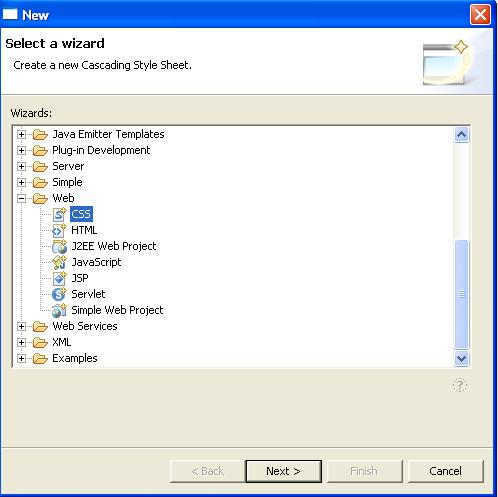
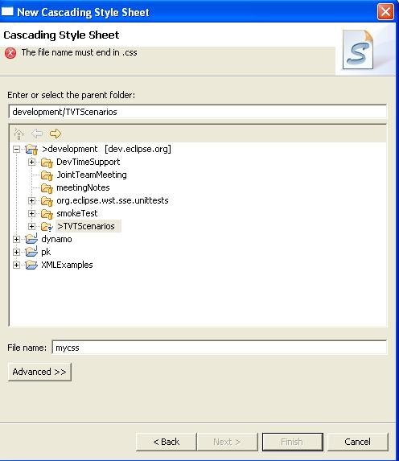
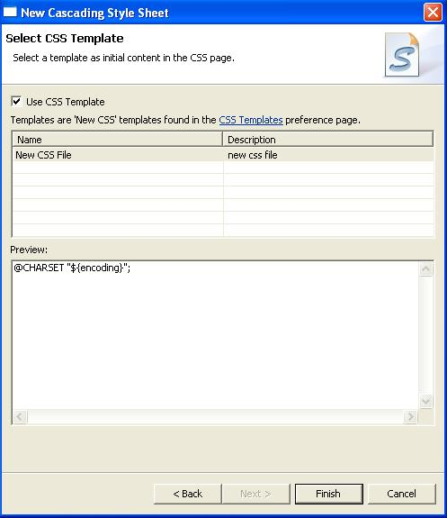
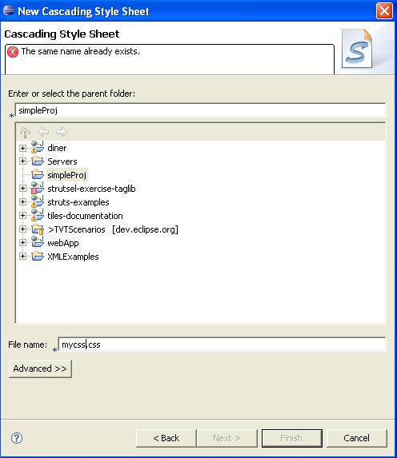

New CSS File Wizard
Steps:
- Go to File ->New ->Other ->Web and select CSS
- Verify description of CSS wizard, Create a new Cascading
Style Sheet.

- Click the Next button
- Verify the following in the New Cascading Style Sheet
dialog:
- New Cascading Style Sheet
- Cascading Style Sheet
- Create a new CSS file.
Note: Other translations are covered by IES.

- Type "mycss.cs"
- Verify the error message that appears.

- Add the last 's' for "mycss.css" then press the Next
button.
- Verify everything on the Select CSS Template dialog
except the Back, Next, Finish, Cancel buttons (those are covered
by IES).

- Press Finish to create the file and leave the wizard.
- Try to create the same exact css file again, "mycss.css"
in the same location.
- Verify the error message that appears.
